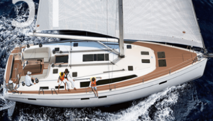

>
關於我們
最新消息
航海課程
港口服務
船艇租賃
碧藍商城
船艇租賃
首頁＞船艇租賃
預算：
--請選擇預算--
10萬（新台幣）以上
5-10萬（新台幣）
2-5萬（新台幣）
1-2萬（新台幣）
1萬（新台幣）以下
人數：
--請選擇人數--
20人以上
10-20人
5-10人
3-5人
2人
排列方式：
--最相關--
最惠售價
最多人數
最多服務
服務：
包船
遠航
近岸
過夜
卡拉OK
適合家庭
無限暢飲
隨船大廚
電音DJ
專職領隊
海上飯店
烤肉架
橡皮艇
大員
製造商：魯容
遠航│包船│過夜│海上飯店│隨船大廚│專職領隊
16
艾瑞克森
遠航│包船│過夜│專職領隊
6
逍遙
近岸│包船│過夜│電音DJ│卡拉OK
20
波賽頓
遠航│無限暢飲│橡皮艇
8
奇勳
遠航│適合家庭│隨船大廚
16

流浪者
近岸│烤肉架│無限暢飲
10
1
2


 10
10


 10
10